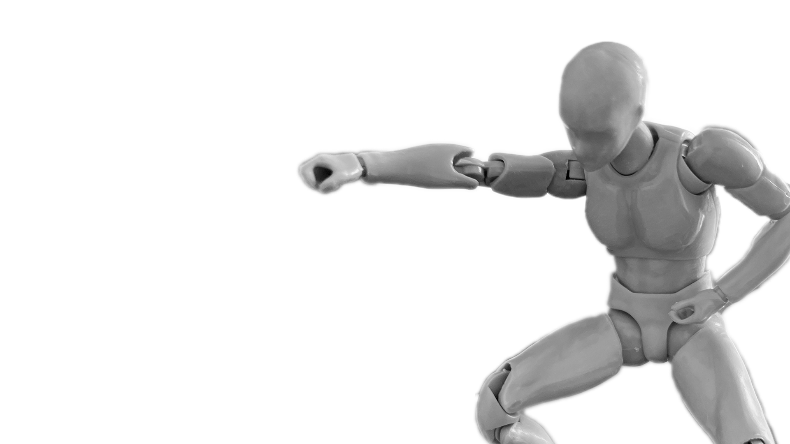
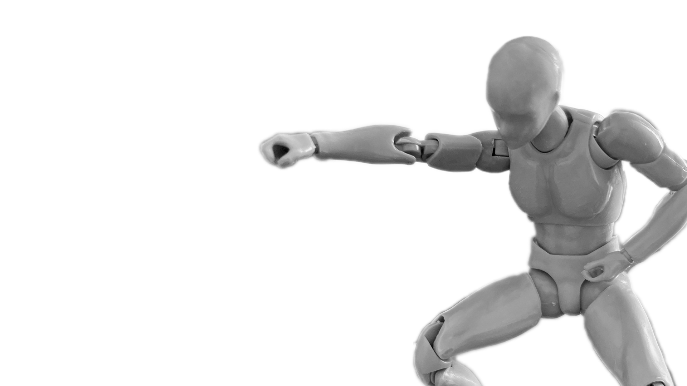

Name - Musashi Trains In Water
Origin - Vagabond (Chapter 302)
Date - April 2012
By - Takehiko Inoue
Musashi Miyamoto trains in the water to feel exhausted and hungry after the kid Iori caught fish in a destroyed crop field. This pose is memorable for its gracefulness expressed and became a very inspirational moment.